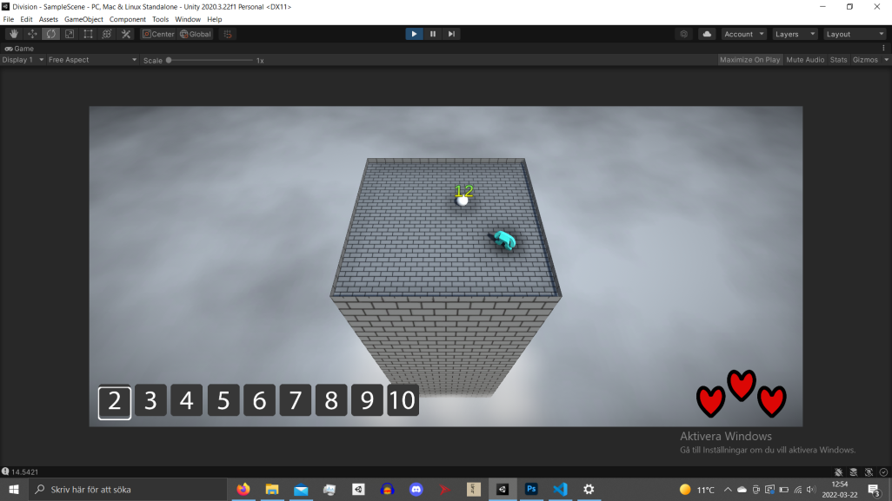
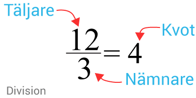

"Rule of Division" är ett roligt sätt för mellanstadieelever att lära sig division. Man lär sig genom att dela tal jämnt genom att hugga monster med svärd. Vårt mål är att hitta ett roligt sätt för elever att bli bättre på matte!
Vi lär ut räknesättet division på en mellanstadienivå. Eleverna kommer att lära sig vilka tal som kan delas jämnt av varandra. De kommer till att börja med lära sig sambandet mellan multiplikation och division. De kommer att få olika svårighetsnivåer att välja.
Det här spelet är tänkt att användas tillsammans med er vanliga undervisning.
Vårt spel kan hjälpa till att göra matematik lite roligare. Det skulle kunna fungera som en matteläxa att exempelvis ta sig igenom 10 rundor i spelet.
Vi vänder oss till mellanstadieelever som är vår målgrupp. Dessa elever lär sig gångertabellerna och behöver därmed även kunna division eftersom att de två räknesätten hör ihop. I mellanstadiet, främst i 4:an, lär sig elever gångertabeller och då skulle det vara lämpligt att följa upp det med stort fokus på division för att befästa informationen. Division som räknesätt kan göras mycket lättare med några knep, till exempel att kolla på entalet för att snabbt se om man kan förkorta hela talet med exempelvis 2. Det finns enkla trick för att avgöra vilka tal som är delbara med vilka andra. De här knepen är bra att lära ut och det kan vi göra med ett spel. Vi gjorde en enkät som elever i åk.4 och åk.6 svarade på. Från våra resultat kunde vi avgöra att nästan alla i båda årskurserna tycker att matematik är svårt eller åtminstone lite svårt. Vi hoppas därför kunna hjälpa till!